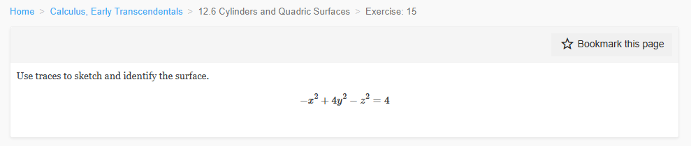

Please solve the math problem in the image.
20260827_000753_258100_utc_0800_0.png

20260827_000753_258100_utc_0800_0.png
End of problem
Answer
## Solution: Identifying the Surface Using Traces
Given equation: $-x^2 + 4y^2 - z^2 = 4$
### Step 1: Rewrite in Standard Form
Divide by 4:
$$
-\frac{x^2}{4} + y^2 - \frac{z^2}{4} = 1
$$
Or equivalently:
$$
\frac{y^2}{1} - \frac{x^2}{4} - \frac{z^2}{4} = 1
$$
### Step 2: Analyze Traces in Coordinate Planes
**Trace in xy-plane ($z = 0$):**
$$
-x^2 + 4y^2 = 4 \quad \Rightarrow \quad \frac{y^2}{1} - \frac{x^2}{4} = 1
$$
This is a **hyperbola** opening along the y-axis, with vertices at $(0, \pm 1)$.
**Trace in yz-plane ($x = 0$):**
$$
4y^2 - z^2 = 4 \quad \Rightarrow \quad \frac{y^2}{1} - \frac{z^2}{4} = 1
$$
This is a **hyperbola** opening along the y-axis, with vertices at $(0, \pm 1)$.
**Trace in xz-plane ($y = 0$):**
$$
-x^2 - z^2 = 4 \quad \Rightarrow \quad x^2 + z^2 = -4
$$
This has **no real solutions** (empty set). This means the surface does not intersect the xz-plane.
### Step 3: Analyze Traces in Parallel Planes
**Trace in plane $y = k$:**
$$
-x^2 + 4k^2 - z^2 = 4 \quad \Rightarrow \quad x^2 + z^2 = 4k^2 - 4 = 4(k^2 - 1)
$$
- For $|k| > 1$: **Circle** of radius $2\sqrt{k^2 - 1}$
- For $|k| = 1$: **Point** (the vertices)
- For $|k| < 1$: **Empty set**
**Trace in plane $x = k$:**
$$
4y^2 - z^2 = 4 + k^2 \quad \Rightarrow \quad \frac{y^2}{(4+k^2)/4} - \frac{z^2}{4+k^2} = 1
$$
This is a **hyperbola** opening along the y-axis.
**Trace in plane $z = k$:**
$$
-x^2 + 4y^2 = 4 + k^2 \quad \Rightarrow \quad \frac{y^2}{(4+k^2)/4} - \frac{x^2}{4+k^2} = 1
$$
This is a **hyperbola** opening along the y-axis.
### Step 4: Identify the Surface
The key characteristics are:
1. Two separate sheets (for $y \geq 1$ and $y \leq -1$)
2. Circular cross-sections perpendicular to the y-axis
3. Hyperbolic traces in planes containing the y-axis
4. No intersection with the xz-plane ($y = 0$)
5. Vertices at $(0, \pm 1, 0)$
$\boxed{\text{This is a hyperboloid of two sheets with axis of symmetry along the y-axis.}}$
The surface consists of two disconnected sheets:
- Upper sheet: $y \geq 1$
- Lower sheet: $y \leq -1$
The standard form is: $\frac{y^2}{1^2} - \frac{x^2}{2^2} - \frac{z^2}{2^2} = 1$
---
20260827_001714_062168_utc_0800_pyplot_0.png